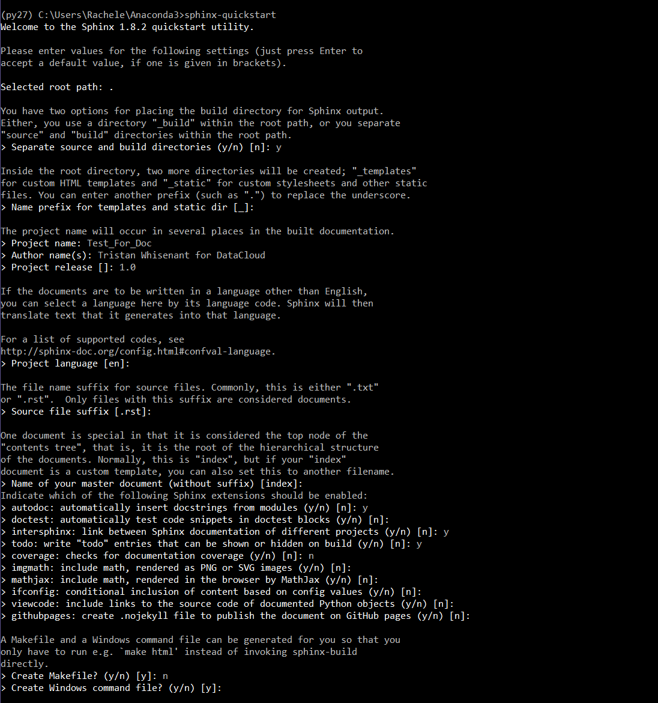

Documenting with Sphinx¶
This guide walks through DataCloud’s specific use of Sphinx documentation software. It will demonstrate how to navigate sphinx-quickstart, format docstrings using google standard notation, and how to build the .html files using sphinx-build in the command line.
Installation and Quickstart¶
Sphinx Download Instructions¶
Sphinx 1.8 is included with all new downloads of Anaconda. This is the last Sphinx version to include support for evaluating Python 2 syntax, so that is what we will use for now.
- Do I have Sphinx?:
If Sphinx is not recognized by the command line in an Anaconda<2/3> directory, check this directory for it:
user_orwhereveryoukeep/Anaconda2/pkgs/sphinx-1.8....If absent, enter
conda install sphinxin a conda-supported terminal. This can also help:
Sphinx-Quickstart¶
When you want to start documentation for a project, enter
sphinx-quickstartto have Sphinx populate a documentation folder for you.Note
Quickstart is only used when starting documentation from scratch. For projects like dc_rhino, a documentation folder has already been created. You can skip straight to the next section, and begin working on connecting the .rst file in your module’s directory with the index file in the documentation directory.
I have included a picture below to show what the options look like. They can be modified later in the config.py file quickstart automatically creates. This example uses .rst files.

Connecting Your Module to the Documentation Directory¶
First, make a restructured text file inside the
module_docdirectory. For now, just give it a little header and do one module, like the .rst file below does. Make sure to change the name to your own after the automodule statement and in the title... DC Rhinos sub directory file for plotter folder and Sphinx Documentation Author: Tristan Whisenant for DataCloud, February 2019 Purpose: Pull modules in plotters folder for index.rst doctree. Plotting Data ************* Plotting Module ======================== .. automodule:: qc_plotter :members:Warning
Make sure to save these documents as
name.rstin addition to selecting the ReStructured Text format.Finally, open the index.rst file and change whatever welcome message/comments you want, but make sure the
globandmodule_docs/*lines don’t change. Feel free to check out the documentation for the toctree... DCRhinoDocs documentation master file, created by sphinx-quickstart on Wed Feb 6 13:20:54 2019. You can adapt this file completely to your liking, but it should at least contain the root `toctree` directive. DC Rhino's Documentation ============================= .. toctree:: :glob: module_docs/* Indices and Search ================== * :ref:`genindex` * :ref:`modindex` * :ref:`search`Sphinx can now see, and document, the contents of
yournewrstfile.rstsitting in a directory (neatly detached from the software I might add).Hint
If autodoc can’t import your module (e.g.
autodoc can't import/find module 'ys_utils'), add the relative path to your module in the conf.py file. Help? <https://stackoverflow.com/questions/10324393/sphinx-build-fail-autodoc-cant-import-find-module>_
Formatting the New .rst File¶
To completely finish
yournewrstfile.rst, we have to do some formatting. Depending on how you want your finished product to look, this could change. However, the bulk of the documentation should be in the code itself. Docstrings inside the code allow documentation to be updated as the code develops, not as an afterthought. Autodoc allows sphinx to build documentation from docstrings.For example, going to an entirely separate .rst file is not as natural as deleting the docstring underneath a deprecated function. For this reason, keep the .rst file minimalistic. Here is an example of a 2-module rst that relies mostly on automodule and docstrings to make the documentation.
Plotdoc.rst
.. DC Rhinos sub directory file for plotter folder and Sphinx Documentation Author: Tristan Whisenant for DataCloud, February 2019 Purpose: Pull modules in plotters folder for index.rst doctree. Plotting Data ************* Plotting Module ======================== .. automodule:: qc_plotter :members: Color Bar Module ========================= .. automodule:: colour_bar_axis_limits :members:
- It may be helpful to have an .rst notation primer ready:
- https://www.sphinx-doc.org/en/master/usage/restructuredtext/basics.html
Documenting your Code¶
Formatting Docstrings¶
Docstrings are started/ended with three quotation marks, allowing Sphinx Autodoc to interpret and build .html documentation from them. Here is an example of a docstring from Google’s Style Guide:
def fetch_bigtable_rows(big_table, keys, other_silly_variable=None): """Fetches rows from a Bigtable. Retrieves rows pertaining to the given keys from the Table instance represented by big_table. Silly things may happen if other_silly_variable is not None. Args: big_table: An open Bigtable Table instance. keys: A sequence of strings representing the key of each table row to fetch. other_silly_variable: Another optional variable, that has a much longer name than the other args, and which does nothing. Returns: A dict mapping keys to the corresponding table row data fetched. Each row is represented as a tuple of strings. For example: {'Serak': ('Rigel VII', 'Preparer'), 'Zim': ('Irk', 'Invader'), 'Lrrr': ('Omicron Persei 8', 'Emperor')} If a key from the keys argument is missing from the dictionary, then that row was not found in the table. Raises: An_Error: An error occurred. """This is where the meat of your documentation lives, and also allows other developers to navigate the software without jumping between .html and .py files. Ideally, we want our documentation to be as readable as possible while remaining compact. Google’s standardized notation for docstrings allows human and sphinx readability through a built-in sphinx extension called napoleon.
Note
Sphinx will still be able to interpret .rst directives not included in Google’s Python Style Guide/napoleon.
Generating .html Files¶
To generate the .html files, open a terminal and enter:
$ sphinx-build sourcedirectory builddirectory.The built .html files will be created in your builddirectory. You can open these with your web browser.
Note
sourcedirectory will be ./ if your terminal is in the sourcedirectory. And builddirectory could be ./html_out, up to you.
Step 9: Celebrate!¶
Hopefully that wasn’t too painful! Enjoy.

Me documenting with Sphinx